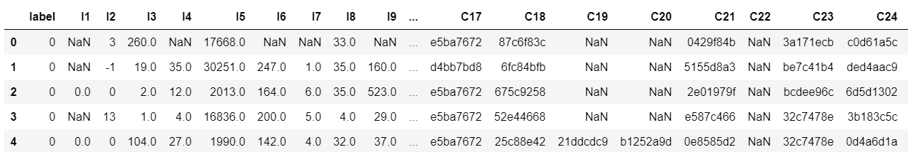
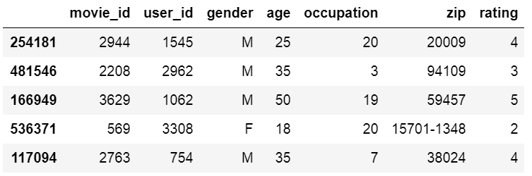

Demos¶
Classification: Criteo¶
The Criteo Display Ads dataset is for the purpose of predicting ads click-through rate. It has 13 integer features and 26 categorical features where each category has a high cardinality.
{kind=link}
In this demo,we simply normailize the integer feature between 0 and 1,you can try other transformation technique like log normalization or discretization.
This example shows how to use DeepFM to solve a simple binary classification task. You can get the demo data criteo_sample.txt and run the following codes.
import pandas as pd
from sklearn.preprocessing import LabelEncoder,MinMaxScaler
from deepctr.models import DeepFM
data = pd.read_csv('./criteo_sample.txt')
sparse_features = ['C' + str(i) for i in range(1, 27)]
dense_features = ['I'+str(i) for i in range(1,14)]
data[sparse_features] = data[sparse_features].fillna('-1', )
data[dense_features] = data[dense_features].fillna(0,)
target = ['label']
# 1.Label Encoding for sparse features,and do simple Transformation for dense features
for feat in sparse_features:
lbe = LabelEncoder()
data[feat] = lbe.fit_transform(data[feat])
mms = MinMaxScaler(feature_range=(0,1))
data[dense_features] = mms.fit_transform(data[dense_features])
# 2.count #unique features for each sparse field,and record dense feature field name
sparse_feature_dict = {feat: data[feat].nunique() for feat in sparse_features}
dense_feature_list = dense_features
# 3.generate input data for model
model_input = [data[feat].values for feat in sparse_feature_dict] + [data[feat].values for feat in dense_feature_list]
#4.Define Model,compile and
model = DeepFM({"sparse": sparse_feature_dict, "dense": dense_feature_list}, final_activation='sigmoid')
model.compile("adam", "binary_crossentropy", metrics=['binary_crossentropy'], )
history = model.fit(model_input, data[target].values,
batch_size=256, epochs=1, verbose=2, validation_split=0.2,)
Regression: Movielens¶
The MovieLens data has been used for personalized tag recommendation,which contains 668, 953 tag applications of users on movies. Here is a small fraction of data include only sparse field.
{kind=link}
This example shows how to use DeepFM to solve a simple binary regression task. You can get the demo data movielens_sample.txt and run the following codes.
import pandas as pd
from sklearn.preprocessing import LabelEncoder,MinMaxScaler
from deepctr.models import DeepFM
data = pd.read_csv("./movielens_sample.txt")
sparse_features = [ "movie_id","user_id","gender","age","occupation","zip"]
target = ['rating']
# 1.Label Encoding for sparse features,and do simple Transformation for dense features
for feat in sparse_features:
lbe = LabelEncoder()
data[feat] = lbe.fit_transform(data[feat])
#2.count #unique features for each sparse field
sparse_feature_dim = {feat:data[feat].nunique() for feat in sparse_features}
#3.generate input data for model
model_input = [data[feat].values for feat in sparse_feature_dim]
#4.Define Model,compile and train
model = DeepFM({"sparse":sparse_feature_dim,"dense":[]},final_activation='linear')
model.compile("adam","mse",metrics=['mse'],)
history = model.fit(model_input,data[target].values,
batch_size=256,epochs=10,verbose=2,validation_split=0.2,)